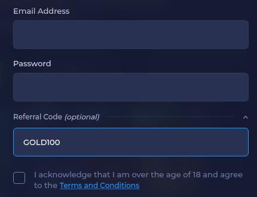

Quick answer: GOLD100 is the Rainbet referral code to enter. It goes into the Referral Code (optional) box on the Register form (Rainbet's help center calls it an affiliate code), on the Register form, before you press Create Account. Type it in capitals with no spaces. What it gets you: the current Rainbet terms for coded accounts (Rainbet sets them).
GOLD100
Checked November 2026.
Rainbet is an online crypto casino and sportsbook. New accounts can add a referral code on the registration form, and GOLD100 is ours.
What GOLD100 gets you: whatever Rainbet currently attaches to coded accounts; Rainbet sets and changes those terms, so check its promotions page.
The code is spelled G-O-L-D-1-0-0: letters G, O, L, D, then the digits 1, 0, 0. A search for "Rainbet bonus code" points to the same code and the same field.
Use the Referral Code (optional) box on the Register form (Rainbet's help center calls it an affiliate code). Leave it until last, but before you submit.

Rainbet's help center gives new players a short grace period: for 24 hours after registering you can redeem a code from the wallet, as long as you have not deposited. After that, or once you deposit, the chance is gone.
Rainbet also says that once a code is set it cannot be changed. If you want GOLD100 on the account, add it at registration or inside that window and before your first deposit.
Rainbet's help center says you have 24 hours after registering to redeem a code from your wallet, as long as you have not deposited yet. Once a code is set, it cannot be changed.
On a phone the Register form scrolls, and the Referral Code (optional) line sits under the password, just above the 18+ checkbox. Tap it to expand the box if it is folded.
In most cases it is one of these:
GOLD100 is meant for people opening a new Rainbet account. If you already have one, the code will not be added to it.
Use one account per person. Opening extra accounts to reuse a code usually breaks Rainbet's terms and can get accounts closed.
Rainbet can change or end its referral terms at any time. Its own site is the final word on what applies today.
You must be 18 or older, and online gambling must be legal where you live.
GOLD100. Enter it in the Referral Code (optional) box on the Register form, before you press Create Account.
Use capitals with no spaces: GOLD100.
No. A code is locked once it is on the account, so choose before you deposit.
No. This is an independent page. Rainbet sets and can change its own terms.
On Rainbet these are the same thing. There is one optional code box and GOLD100 goes there.
Possibly, if you act within 24 hours of registering and before your first deposit, from the wallet section.
18+ only. Gambling involves real financial risk; only play where online gambling is legal for you, set a budget before you start, and stop if it stops being fun.
Disclosure: GOLD100 is our affiliate code, so we may earn a commission. It costs you nothing extra.